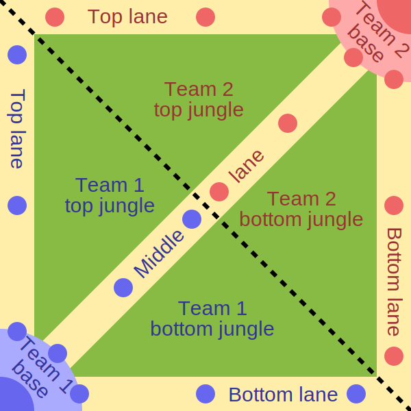

Dota 2 quick guide
Wat is Dota 2?
Dota valt onder het genre "multiplayer online battle arena" of kortweg MOBA en is daarmee dus een multiplayer game. In de game spelen twee teams van vijf spelers tegen elkaar. Elke speler kiest bij het begin van het spel een karakter (hero) waarmee die het speelveld wil opgaan. Om te winnen moeten beide teams proberen de troon van de tegenstander te vernietigen. Tussen het kiezen van je hero en de overwinning zitten tal van gebeurtenissen die maken dat Dota een zeer tactische game is: creeps aanvallen, hero's van het andere team killen, torens neerhalen, Roshan killen, …. Elk van deze gebeurtenissen kan de uitkomst van de game sterk beïnvloeden. Deze volledig bespreken gaat het doel van deze pagina voorbij. Wel hoop ik de basis te behandelen, startende bij het begin. Je zal merken dat ik doorheen deze pagina regelmatig engelse termen gebruik. Dat is voornamelijk omdat het gross van de Dota community in het engels communiceert.
Het kiezen van een Hero
Welke hero je kiest bij de aanvang van het spel is erg belangrijk. Een verkeerde keuze kan heel snel uitdraaien in een loss voor je team. Er zijn een aantal zaken waarmee rekening moet worden gehouden bij het kiezen van een karakter. Zo zijn er een aantal rollen die elk team moet hebben om succesvol te kunnen zijn. Elke hero valt onder een bepaalde rol door de ability's waar die over beschikt. Een ability is een kracht of eigenschap dat de hero sterker maakt. Deze ability's bepalen dus welke rol een hero kan vervullen. Om inzicht te krijgen in de verschillende rollen moet er eerst worden gekeken naar hoe het speelveld is opgebouwd en waar de spelers zich bevinden.
3 lanes

Op de map kan je duidelijk zien dat het veld is opgebouwd uit drie lanes met daartussen jungle. In principe kan iedere speler doen wat die wil op de map, je kan vrij bewegen. Toch is er een belangrijk spelaspect dat de spelers naar de 3 lanes duwt. Elke 30 seconden verschijnen er namelijk creeps in elke lane, voor beide teams. Dit zijn computer gestuurde bots. Wanneer creeps in de lane spawnen lopen ze de lane af totdat ze een vijand tegenkomen die zie kunnen aanvallen (heros of creeps van het andere team). Voor je hero levert het doden van vijandige creeps zoals in veel games geld en xp op. Deze rescource verplicht je karakter in lane om te farmen (creeps aanvallen). Doe je dit niet dan wordt de tegenstander alleen maar sterker terwijl jij op hetzelfde niveau blijft hangen.
In de game heb je dus 3 lanes waar er gefarmed kan worden. Als team moet je de 5 hero's dus verdelen over de 3 lanes. Volgende opstelling is ideaal in de meeste gevallen:
- 2 spelers in de bovenst lane (top lane)
- 1 speler in de middelste lane (mid lane)
- 2 spelers in de onderste lane (bot lane)
In elke lane is er telkens één hero die farmt. In totaal heeft een team dus 3 hero's die farmen:
- Carry
- Van deze speler wordt verwacht dat die veel farmt.
- Mid laner
- Deze speler staat alleen in de lane en heeft dus naast farm ook veel xp. Early game is dat dan ook de belangrijkste speler.
- Off laner
- De job van deze speler, naast farmen, is om de carry van het tegenstander team klein te houden.
Dit laat nog 2 spelers zonder rol. Voor deze spelers is er geen farm, hun job is er in voorzien dat hun carry of off laner zoveel mogelijk kan farmen. Dit zijn de supports van het team.
Kies een hero die past bij je rol
Deze verschillende rollen moeten worden ingevuld. Het is belangrijk dat je een hero kiest die past bij de rol die je vervult.
Verloop van het spel
Bij de start van de game blijft elke speler zoals hiervoor besproken voornamelijk in eigen lane. Vanaf een bepaald moment, wanneer de offlaner en midlaner sterk genoeg zijn, gebeuren er heel wat rotations. Deze speler verlaten dan hun lane om druk uit te oefenen op het andere team. Dit kan een team door kills te jagen, torens neer te halen of Roshan te killen. Zo kan een team druk zetten op zijn tegenstander, voornamelijk om hun carry de ruimte te geven om te farmen. Wanneer de carry van je team voldoende gefarmt heeft kan een team dan voor de troon gaan.
Torens
Een spelletje Dota winnen doe je door de troon van de tegenstander kapot te maken. Bij de start van het spel kan je de troon nog niet aanvallen, doordat er in elke lane 3 torens staan. Voor het vernietigen van de torens van een tegenstander werk je van buiten naar binnen. Je kan dus niet meteen de torens neerhalen die het dichtst liggen bij de troon. Pas wanneer alle torens in een lane neer zijn kan een team voor de troon gaan. Er moet dus eerst een lane volledig vrij zijn.
Roshan
In het midden van het speelveld bevindt zich er een soort van boss monster: Roshan. Een team kan Roshan neerhalen om daar een extra leven van te krijgen. Roshan laat wanneer hij neergaat namelijk een soort steen vallen. De speler die deze steen oppakt komt wanneer die gedood wordt een keertje terug. Als een team voor Roshan gaat doen ze dat meestal om druk te leggen op het tegenstander team.
Dota als een e-sport
De competitive scene van Dota is één van de grootste die gekend is binnen de e-sports wereld. Zo heeft Dota het record van grootste bedrag in prijzengeld op zijn naam met een gigantisch bedrag van 34.3 miljoen dollar. Dat de competitive scene leeft is dus wel zeker. Ook de gewone speler kan zijn rank meten tegen de Dota communitie. Speler die graag competitief spelen krijgen namelijk een rank toegewezen. In de tabel hieronder wordt het ranking systeem van Dota kort samengevat. Hierbij is een hogere score beter.
| 1 | 2 | 3 | 4 | 5 | |
|---|---|---|---|---|---|
| Herald | 0-153 | 154-307 | 308-461 | 462-615 | 616-769 |
| Guardian | 770-923 | 924-1077 | 1078-1231 | 1232-1385 | 1386-1539 |
| Crusader | 1540-1693 | 1848-2001 | 2002-2155 | 2156-2309 | |
| Archon | 2310-2463 | 2464-2617 | 2618-2771 | 2772-2961 | 2962-3079 |
| Legend | 3080-3233 | 3234-3387 | 3388-3541 | 3542-3695 | 3696-3849 |
| Ancient | 3850-4003 | 4004-4157 | 4158-4311 | 4312-4465 | 4466-4619 |
| Divine | 4620-4819 | 4820-5019 | 5020-5219 | 5220-5419 | 5420+ |
| Immortal | Placed | ||||
Conclusie
Dota is een zeer tactische game waar je vaak op kunt vloeken. Het is geen spel waar je moet instappen als je er niet de nodige tijd in wilt investeren. Dit maakt dat het voor nieuwe spelers niet echt interessant is omdat het een trage learning curve heeft. Als je toch besluit om er mee te beginnen doe het dan samen met vrienden. Dota schittert het meest als je het met een team van 5 vrienden kunt spelen.